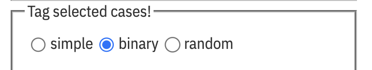

Tagging cases
There are three flavors of tagging. Choose which one using the buttons at the top of choosy.

- simple: You tag the selection with some value, and the other cases are blank.
- binary: You tag the selection with some value, and the other cases get some other value.
- random: You tag a random sample of the cases with some value, and the rest get another value.
Each of these is described on the screen. Enter the values you want to tag with, and possibly edit the name of the attribute you want to hold the tags. Then press the green “plus” button to add the tags.
Additional notes:
- In the simple case, tagging a new selection adds it to the tagged set. Likewise, un-tagging removes the selection from the tagged set. This is useful for making more complicated selections.
- The random case is great for making a random sample, of course, but also perfect for making a training set and a test set when you’re thinking about machine learning.
To tag or not to tag?
Suppose you want to tag all the people with Age between 18 and 25. You could make a graph of Age and select that range, and tag them.
But you might mess up your selection. If the precise ages are important, it’s probably better to make a new column yourself and give it a formula.
Having said that, some groups of data are just easier to select than to write a formula for. In those cases, by all means, use choosy and tagging.
For example, suppose you want to find all of the females between 18 and 25 who are taller than 5 feet 8 (perhaps they are the basketball prospects). The formula will be long and awkward. If you want to grab that group quickly, make the appropriate graph(s) and select the people you want, and tag them.